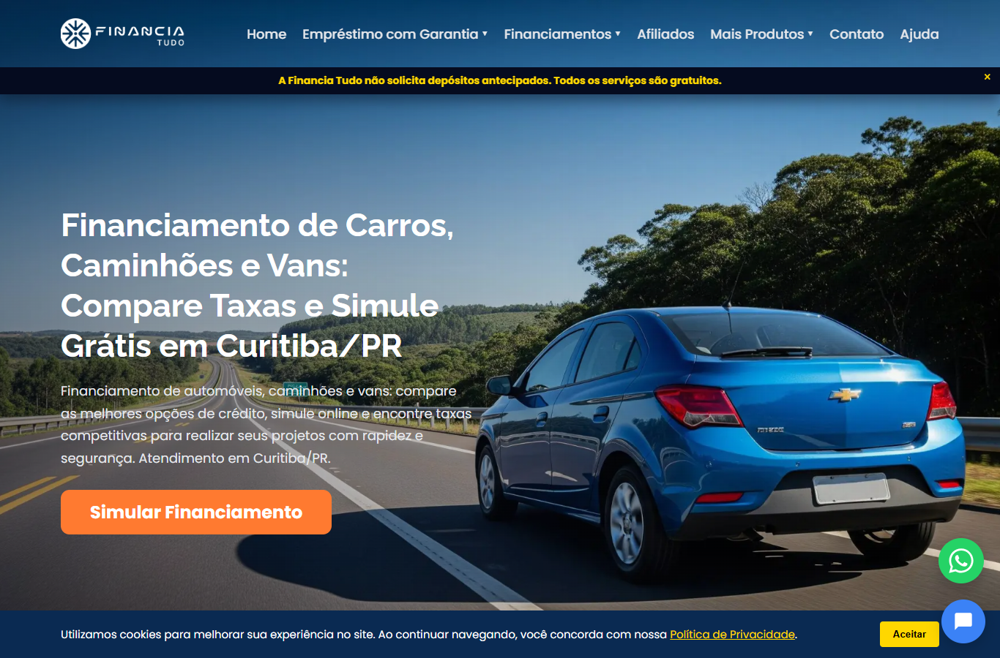
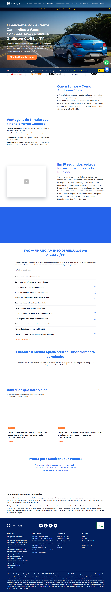

Sistema de Investigação de Marca e Identidade Online
https://financiatudo.com.br/financiamento-veiculos/curitiba-pr
Prioridade: MEDIUM · Cenário: B_AMBIGUOUS_COMMUNICATION · Revisão humana: PENDING
Trata-se de landing page do correspondente bancário 'Financia Tudo' (Financia Tudo Negócios e Serviços Ltda., CNPJ 22.208.602/0001-71) voltada à captação e simulação de financiamento de veículos. Embora a empresa apresente identidade visual própria, atue em contexto multibancos e exiba aviso expresso de Correspondente Bancário (Resolução CMN nº 4.935/2021) no rodapé, ela utiliza o logotipo do Banco BV ('LOGO_BV.webp', E-IMG-18) em seu carrossel de bancos parceiros. Como o uso de logotipo da instituição financeira contratante por correspondente bancário contraria o art. 14, II, da Resolução CMN nº 4.935/2021 (e conforme diretriz de auditoria para páginas de financiamento que exibem logotipo da marca), o caso requer revisão humana (B_AMBIGUOUS_COMMUNICATION / REVIEW_REQUIRED). [Revisor: CONFIRM] Confirma-se a classificação REVIEW_REQUIRED (prioridade MEDIUM). Trata-se de página comercial de captação e simulação de financiamento de veículos operada pelo correspondente bancário Financia Tudo Negócios e Serviços Ltda. (CNPJ 22.208.602/0001-71, E-FTR). Apesar de declarar atuação como correspondente bancário nos termos da Resolução CMN nº 4.935/2021 no rodapé (E-TXT-007, E-TXT-008), a página exibe o logotipo do Banco BV no carrossel de instituições parceiras (E-IMG-18) e não apresenta diretamente os canais de atendimento/ouvidoria da instituição financeira contratante (E-TXT-009), demandando análise de conformidade.


| Ref | Tipo | Local | Conteúdo |
|---|---|---|---|
| E-URL | domain | url | URL final: https://financiatudo.com.br/financiamento-veiculos/curitiba-pr (domínio: financiatudo.com.br) |
| E-DISC-001 | text | search_index | Índice de busca (grounding): financiatudo.com.br — **Nome do Estabelecimento:** Financia Tudo | **URL:** `https://financiatudo.com.br/` (Landing page de Financiamento de Veículos em Curitiba/PR) | **Uso da Marca e Oferta:** Plataforma/landing page direcionada à captação de leads para *"FINANCIAMENTO DE VEÍCULOS em Curitiba/PR"* com botão de *"Simular Financiamento"*, listando o **Banco BV** e a **Cashme** (empresa do grupo BV) em sua seção de instituições financeiras operadas |
| E-SHOT-VIEWPORT | screenshot | viewport | evidence\C8f5a08ddd5\attempt-1\viewport.png (sha256 6575d17dc64127b8…) |
| E-SHOT-FULL | screenshot | page | evidence\C8f5a08ddd5\attempt-1\fullpage.png (sha256 b409d076ba305dd6…) |
| E-TITLE | title | head | Financiamento de Veículos | Financia Tudo em Curitiba - PR |
| E-META-1 | meta | head | description: Financie seu carro novo ou usado com taxas competitivas e prazos flexíveis. Atendimento em Curitiba - PR. |
| E-META-2 | meta | head | og:site_name: Financia Tudo |
| E-META-3 | meta | head | og:title: Financiamento de Veículos | Financia Tudo em Curitiba - PR |
| E-META-4 | meta | head | og:description: Financie seu carro novo ou usado com taxas competitivas e prazos flexíveis. Atendimento em Curitiba - PR. |
| E-META-5 | meta | head | author: Financia Tudo |
| E-CANONICAL | meta | head | https://financiatudo.com.br/financiamento-veiculos/curitiba-pr |
| E-HEAD-1 | heading | page | Financiamento de Carros, Caminhões e Vans: Compare Taxas e Simule Grátis em Curitiba/PR |
| E-HEAD-2 | heading | page | Quem Somos e Como Ajudamos Você |
| E-HEAD-3 | heading | page | Vantagens de Simular seu Financiamento Conosco |
| E-HEAD-4 | heading | page | Em 15 segundos, veja de forma clara como tudo funciona. |
| E-HEAD-5 | heading | page | Simulação Online e Gratuita |
| E-HEAD-6 | heading | page | Análise de Crédito e Proposta |
| E-HEAD-7 | heading | page | Envio da Documentação |
| E-HEAD-8 | heading | page | Assinatura e Liberação do Dinheiro |
| E-HEAD-9 | heading | page | FAQ — FINANCIAMENTO DE VEÍCULOS em Curitiba/PR |
| E-HEAD-10 | heading | page | Encontre a melhor opção para seu financiamento de veículos |
| E-HEAD-11 | heading | page | Conteúdo que Gera Valor |
| E-HEAD-12 | heading | page | Como conseguir crédito com caminhão em garantia para financiar a manutenção preventiva da frota |
| E-HEAD-13 | heading | page | Condomínio com elevadores interditados: como viabilizar recursos para recuperar os equipamentos |
| E-HEAD-14 | heading | page | Pronto para Realizar Seus Planos? |
| E-HEAD-15 | heading | page | Atendimento online em Curitiba/PR |
| E-HDR | text | header | Home Empréstimo com Garantia ▼ Financiamentos ▼ Afiliados Mais Produtos ▼ Contato Ajuda A Financia Tudo não solicita depósitos antecipados. Todos os serviços são gratuitos. × |
| E-FOLD | text | viewport (acima da dobra) | Home Empréstimo com Garantia ▼ Financiamentos ▼ Afiliados Mais Produtos ▼ Contato Ajuda A Financia Tudo não solicita depósitos antecipados. Todos os serviços são gratuitos. × Financiamento de Carros, Caminhões e Vans: Compare Taxas e Simule Grátis em Curitiba/PR Financiamento de automóveis, caminhões e vans: compare as melhores opções de crédito, simule online e encontre taxas competitivas para realizar seus projetos com rapidez e segurança. Atendimento em Curitiba/PR. Simular Financiamento Utilizamos cookies para melhorar sua experiência no site. Ao continuar navegando, você concorda com nossa Política de Privacidade . Aceitar |
| E-FTR | text | footer | Procure nossa empresa no Empréstimos Empréstimo com Caminhões em Garantia Empréstimo com Imóvel em Garantia Empréstimo com Terreno em Garantia Empréstimo com Vans em Garantia Empréstimo com Veículos em Garantia Empréstimo com Veículos Não Quitados Empréstimo com Ônibus em Garantia Empréstimo para Capital de Giro Empréstimo para Condomínios Empréstimo para Construção Empréstimo para Imóveis Não Quitados Empréstimo para Término de Obra Empréstimo Pix no Cartão Home Equity Financiamentos Financiamento de Caminhões Financiamento de Imóveis Comerciais Financiamento de Imóveis Não Quitados Financiamento de Imóveis Residenciais Financiamento de Vans Financiamento de Veículos Financiamento de Veículos Não Quitados Financiamento de Ônibus Outros Produtos Consórcio de Imóveis Consórcio de Veículos Energia Solar por Assinatura Proteção Veicular Seguros Afiliados Links Úteis Ajuda Contato Política de Privacidade Termos de Uso Regiões Atendidas Blog A Financia Tudo Negócios e Serviços Ltda., inscrita no CNPJ nº 22.208.602/0001-71, em atividade desde abril de 2015, é uma empresa devidamente constituída que atua como Correspondente Bancário, nos termos da regulamentação do Banco Central do Brasil, conforme a Resolução CMN nº 4.935/2021, cujo principal gestor atua no mercado financeiro há mais de 40 anos. Nosso papel é intermediar e facilitar o acesso a produtos de crédito entre clientes e instituições financeiras parceiras, oferecendo orientação durante todo o processo. A Financia Tudo não é uma instituição financeira (banco) e, portanto, não realiza análise de crédito, aprovação ou concessão de financiamentos. Essas etapas são de responsabilidade exclusiva das instituições financeiras parceiras, de acordo com suas políticas internas. Para consultar a relação completa e atualizada das instituições financeiras com as quais mantemos convênio, acesse: Visualizar lista de instituições parceiras. A sede central da empresa está localizada na Rua Pedro Siqueira, nº 1318, sala 01, Centro, |
| E-NAV | nav | header | Financia Tudo <https://financiatudo.com.br/> | Home <https://financiatudo.com.br/> | Empréstimo com Garantia ▼ <https://financiatudo.com.br/financiamento-veiculos/curitiba-pr#> | Financiamentos ▼ <https://financiatudo.com.br/financiamento-veiculos/curitiba-pr#> | Afiliados <https://financiatudo.com.br/afiliados> | Mais Produtos ▼ <https://financiatudo.com.br/financiamento-veiculos/curitiba-pr#> | Contato <https://financiatudo.com.br/contato> | Ajuda <https://financiatudo.com.br/faq> |
| E-CTA-1 | cta | header | × |
| E-CTA-2 | cta | page | Simular Financiamento <https://app.financiatudo.com.br/financiamento-de-veiculos> |
| E-CTA-3 | cta | page | Aceitar |
| E-CONTACT-1 | contact | footer | Instagram <https://www.instagram.com/financia.tudo/> |
| E-CONTACT-2 | contact | footer | WhatsApp <https://financiatudo.com.br/whatsapp> |
| E-CONTACT-3 | contact | footer | Facebook <https://www.facebook.com/financiatudo> |
| E-CONTACT-4 | contact | footer | Conversar pelo WhatsApp <https://financiatudo.com.br/whatsapp> |
| E-CONTACT-5 | contact | page | Atendimento WhatsApp <https://financiatudo.com.br/whatsapp> |
| E-IMG-1 | image | header (acima da dobra) | imagem alt='Financia Tudo' src=https://financiatudo.com.br/content/theme/assets/img/logo.png (170x42, acima da dobra) |
| E-IMG-2 | image | page (acima da dobra) | imagem alt='Liberty' src=https://financiatudo.com.br/content/theme/assets/img/bancos/LOGO_LIBERTY.webp (68x35, acima da dobra) |
| E-IMG-3 | image | page (acima da dobra) | imagem alt='Libra' src=https://financiatudo.com.br/content/theme/assets/img/bancos/LOGO_LIBRA.webp (65x35, acima da dobra) |
| E-IMG-4 | image | page (acima da dobra) | imagem alt='OMNI Soluções Financeiras' src=https://financiatudo.com.br/content/theme/assets/img/bancos/LOGO_OMNI.webp (60x35, acima da dobra) |
| E-IMG-5 | image | page (acima da dobra) | imagem alt='Porto' src=https://financiatudo.com.br/content/theme/assets/img/bancos/LOGO_PORTO.webp (147x35, acima da dobra) |
| E-IMG-6 | image | page (acima da dobra) | imagem alt='Tokio Marine' src=https://financiatudo.com.br/content/theme/assets/img/bancos/LOGO_TOKIO_MARINE.webp (142x35, acima da dobra) |
| E-IMG-7 | image | page (acima da dobra) | imagem alt='Itaú' src=https://financiatudo.com.br/content/theme/assets/img/bancos/LOGO_ITAU.webp (35x35, acima da dobra) |
| E-IMG-8 | image | page (acima da dobra) | imagem alt='Bradesco' src=https://financiatudo.com.br/content/theme/assets/img/bancos/LOGO_BRADESCO.webp (150x35, acima da dobra) |
| E-IMG-9 | image | page (acima da dobra) | imagem alt='Santander' src=https://financiatudo.com.br/content/theme/assets/img/bancos/LOGO_SANTANDER.webp (132x23, acima da dobra) |
| E-IMG-10 | image | page (acima da dobra) | imagem alt='Inter' src=https://financiatudo.com.br/content/theme/assets/img/bancos/LOGO_INTER.webp (136x35, acima da dobra) |
| E-IMG-11 | image | page (acima da dobra) | imagem alt='C6 Bank' src=https://financiatudo.com.br/content/theme/assets/img/bancos/LOGO_C6_BANK.webp (158x35, acima da dobra) |
| E-IMG-12 | image | page (acima da dobra) | imagem alt='Banco Daycoval' src=https://financiatudo.com.br/content/theme/assets/img/bancos/LOGO_BANCO_DAYCOVAL.webp (89x35, acima da dobra) |
| E-IMG-13 | image | page (acima da dobra) | imagem alt='Banco Bari' src=https://financiatudo.com.br/content/theme/assets/img/bancos/LOGO_BANCO_BARI.webp (94x35, acima da dobra) |
| E-IMG-14 | image | page (acima da dobra) | imagem alt='Banco do Brasil' src=https://financiatudo.com.br/content/theme/assets/img/bancos/LOGO_BANCO_DO_BRASIL.webp (69x35, acima da dobra) |
| E-IMG-15 | image | page (acima da dobra) | imagem alt='Banco PAN' src=https://financiatudo.com.br/content/theme/assets/img/bancos/LOGO_BANCO_PAN.webp (140x35, acima da dobra) |
| E-IMG-16 | image | page (acima da dobra) | imagem alt='Rodobens' src=https://financiatudo.com.br/content/theme/assets/img/bancos/LOGO_BANCO_RODOBENS.webp (82x35, acima da dobra) |
| E-IMG-17 | image | page (acima da dobra) | imagem alt='Bradesco Seguros' src=https://financiatudo.com.br/content/theme/assets/img/bancos/LOGO_BRADESCO_SEGUROS.webp (89x35, acima da dobra) |
| E-IMG-18 | image | page (acima da dobra) | imagem alt='Banco BV' src=https://financiatudo.com.br/content/theme/assets/img/bancos/LOGO_BV.webp (53x35, acima da dobra) |
| E-IMG-19 | image | page (acima da dobra) | imagem alt='Cashme' src=https://financiatudo.com.br/content/theme/assets/img/bancos/LOGO_CASHME.webp (147x29, acima da dobra) |
| E-IMG-20 | image | page (acima da dobra) | imagem alt='Creditas' src=https://financiatudo.com.br/content/theme/assets/img/bancos/LOGO_CREDITAS.webp (181x35, acima da dobra) |
| E-TXT-001 | text | page | Financiamento de automóveis, caminhões e vans: compare as melhores opções de crédito, simule online e encontre taxas competitivas para realizar seus projetos com rapidez e segurança. Atendimento em Curitiba/PR. |
| E-TXT-002 | text | page | A Financia Tudo conecta você às melhores instituições financeiras, evitando que você precise simular em vários sites. Basta preencher seus dados uma única vez e receber as melhores propostas de crédito para financiar seu carro ou moto, novo ou usado. Atendimento online disponível em Curitiba/PR. |
| E-TXT-003 | text | page | O vídeo a seguir apresenta de forma rápida e objetiva como funciona o financiamento de veículos, mostrando as etapas de análise, as condições disponíveis e os benefícios de financiar com bancos parceiros confiáveis. Em apenas 15 segundos, você entende como adquirir ou trocar seu carro com taxas acessíveis, prazos estendidos e um processo seguro e transparente conduzido pela Financia Tudo. Assista |
| E-TXT-004 | text | page | Atendimento online em Curitiba/PR |
| E-TXT-005 | text | page | Na Financia Tudo, moradores de Curitiba/PR e região podem contratar soluções de crédito com praticidade, segurança e atendimento especializado. Trabalhamos com bancos e instituições financeiras parceiras para buscar as melhores condições de financiamento, refinanciamento e crédito de acordo com o perfil de cada cliente. |
| E-TXT-006 | text | page | Você pode simular, enviar documentos e acompanhar cada etapa sem sair de casa — com orientação clara e atendimento centralizado pela nossa equipe. Todo o processo é realizado de forma 100% online, desde a simulação até o envio de documentos e acompanhamento da proposta. Nossa equipe presta suporte em todas as etapas, oferecendo orientação clara, agilidade no atendimento e acompanhamento |
| E-TXT-007 | text | page | A Financia Tudo Negócios e Serviços Ltda., inscrita no CNPJ nº 22.208.602/0001-71, em atividade desde abril de 2015, é uma empresa devidamente constituída que atua como Correspondente Bancário, nos termos da regulamentação do Banco Central do Brasil, conforme a Resolução CMN nº 4.935/2021, cujo principal gestor atua no mercado financeiro há mais de 40 anos. Nosso papel é intermediar e facilitar o |
| E-TXT-008 | text | page | acesso a produtos de crédito entre clientes e instituições financeiras parceiras, oferecendo orientação durante todo o processo. A Financia Tudo não é uma instituição financeira (banco) e, portanto, não realiza análise de crédito, aprovação ou concessão de financiamentos. Essas etapas são de responsabilidade exclusiva das instituições financeiras parceiras, de acordo com suas políticas internas. |
| E-TXT-009 | text | page | Para consultar a relação completa e atualizada das instituições financeiras com as quais mantemos convênio, acesse: Visualizar lista de instituições parceiras. A sede central da empresa está localizada na Rua Pedro Siqueira, nº 1318, sala 01, Centro, Guarapuava-PR, CEP 85010-330. Atendimento: segunda a sexta, das 08h30 às 12h e das 13h30 às 17h. Telefone: (42) 3035-1037 | Conversar pelo WhatsApp. |
| Dimensão | Sinal | Achado | Refs |
|---|---|---|---|
| VISUAL_IDENTITY | LEGITIMATE | A página utiliza identidade visual própria ('Financia Tudo'), sem imitar cores, layout ou tipografia do Banco BV. | E-SHOT-VIEWPORT E-SHOT-FULL E-IMG-1 |
| DECLARED_COMMERCIAL_IDENTITY | LEGITIMATE | O estabelecimento identifica claramente sua razão social (Financia Tudo Negócios e Serviços Ltda.), CNPJ (22.208.602/0001-71) e endereço físico no rodapé. | E-FTR E-TXT-007 E-TXT-009 |
| CORRESPONDENT_TRANSPARENCY | NEUTRAL | Há declaração expressa de atuação como Correspondente Bancário nos termos da Resolução CMN nº 4.935/2021 no rodapé, informando que não é instituição financeira; contudo, a relação nominal de bancos conveniados depende de acesso a link externo/interno ('Visualizar lista de instituições parceiras') e não há menção à ouvidoria do Banco BV. | E-FTR E-TXT-007 E-TXT-008 E-TXT-009 |
| INSTITUTIONAL_LANGUAGE | LEGITIMATE | A linguagem utilizada posiciona a empresa claramente como intermediadora/comparadora multibancos ('A Financia Tudo conecta você às melhores instituições financeiras'), sem se passar pelo Banco BV. | E-TXT-002 E-TXT-005 E-TXT-008 |
| LOGO_USAGE | CONFUSION | O site carrega e exibe o logotipo do Banco BV ('LOGO_BV.webp') junto a logotipos de outros bancos em carrossel na página de captação de financiamento, conduta que requer revisão frente ao art. 14, II, da Resolução CMN nº 4.935/2021. | E-IMG-18 E-SHOT-FULL |
| SERVICE_JOURNEY | NEUTRAL | Captação de leads para simulação de financiamento de veículos ('Simular Financiamento') direcionando para 'app.financiatudo.com.br', atuando como correspondente multibancos. | E-CTA-2 E-FOLD E-TXT-002 |
| CONTACT_CHANNELS | LEGITIMATE | Os canais de contato (telefone fixo, WhatsApp e redes sociais) estão claramente vinculados à própria Financia Tudo. | E-CONTACT-1 E-CONTACT-2 E-TXT-009 |
| CONSUMER_CONFUSION | NEUTRAL | Baixo risco de o consumidor acreditar estar no site oficial do Banco BV, dado o contexto multibancos e a identificação da Financia Tudo, mas há uso de marca/logotipo da instituição financeira. | E-SHOT-VIEWPORT E-IMG-18 E-FTR |
Trata-se de landing page do correspondente bancário 'Financia Tudo' (Financia Tudo Negócios e Serviços Ltda., CNPJ 22.208.602/0001-71) voltada à captação e simulação de financiamento de veículos. Embora a empresa apresente identidade visual própria, atue em contexto multibancos e exiba aviso expresso de Correspondente Bancário (Resolução CMN nº 4.935/2021) no rodapé, ela utiliza o logotipo do Banco BV ('LOGO_BV.webp', E-IMG-18) em seu carrossel de bancos parceiros. Como o uso de logotipo da instituição financeira contratante por correspondente bancário contraria o art. 14, II, da Resolução CMN nº 4.935/2021 (e conforme diretriz de auditoria para páginas de financiamento que exibem logotipo da marca), o caso requer revisão humana (B_AMBIGUOUS_COMMUNICATION / REVIEW_REQUIRED).
A página declara atuação como correspondente/prestador e identifica a empresa, mas não houve confirmação em cadastro autorizado.
| Tipo | Valor | Ref | Contexto |
|---|---|---|---|
| domain | financiatudo.com.br | E-URL | |
| cnpj | 22.208.602/0001-71 | E-FTR | tica de Privacidade Termos de Uso Regiões Atendidas Blog A Financia Tudo Negócios e Serviços Ltda., inscrita no CNPJ nº 22.208.602/0001-71 |
| legal_name | Regiões Atendidas Blog A Financia Tudo Negócios e Serviços Ltda | E-FTR | |
| social_profile | https://www.instagram.com/financia.tudo/ | E-CONTACT-1 | |
| social_profile | https://www.facebook.com/financiatudo | E-CONTACT-3 | |
| legal_name | A Financia Tudo Negócios e Serviços Ltda | E-TXT-007 | |
| trade_name | Financia Tudo | E-META-2 | |
| phone | (42) 3035-1037 | E-TXT-009 | |
| WhatsApp <https://financiatudo.com.br/whatsapp> | E-CONTACT-2 | ||
| Conversar pelo WhatsApp <https://financiatudo.com.br/whatsapp> | E-CONTACT-4 | ||
| Atendimento WhatsApp <https://financiatudo.com.br/whatsapp> | E-CONTACT-5 | ||
| correspondent_declaration | Correspondente Bancário | E-FTR | Procure nossa empresa no Empréstimos Empréstimo com Caminhões em Garantia Empréstimo com Imóvel em Garantia Empréstimo com Terreno em Garantia Empréstimo com Vans em Garantia Empréstimo com Veículos e |
| correspondent_declaration | Resolução CMN nº 4.935 | E-FTR | Procure nossa empresa no Empréstimos Empréstimo com Caminhões em Garantia Empréstimo com Imóvel em Garantia Empréstimo com Terreno em Garantia Empréstimo com Vans em Garantia Empréstimo com Veículos e |
| correspondent_declaration | não é uma instituição financeira | E-FTR | Procure nossa empresa no Empréstimos Empréstimo com Caminhões em Garantia Empréstimo com Imóvel em Garantia Empréstimo com Terreno em Garantia Empréstimo com Vans em Garantia Empréstimo com Veículos e |
Mapeamento indicativo para apoio à auditoria. Não constitui conclusão regulatória; a decisão definitiva pertence à auditoria.
Fonte: NORMATIVE
Art. 14. O contrato de correspondente deve estabelecer: [...] II - vedação à utilização, pelo contratado, de logomarca ou de outros atributos que sejam similares aos adotados pela instituição contratante em suas agências, postos de atendimento, sítio eletrônico na internet, aplicativo ou outras plataformas de comunicação em rede;
Hipótese: Uso de logomarca ou de atributos similares aos adotados pela contratante em seus canais. Aplicável somente se confirmado o vínculo de correspondente.
Evidência observada: E-DISC-001 E-IMG-18 E-SHOT-FULL
Informação faltante:
Fonte: NORMATIVE
Art. 14. O contrato de correspondente deve estabelecer: [...] III - divulgação ao público, pelo contratado, de sua condição de prestador de serviços à instituição contratante, identificada pelo nome com que é conhecida no mercado, com descrição dos produtos e serviços oferecidos e canais de contato da instituição contratante, inclusive de sua ouvidoria, em local visível, em destaque e em formato legível, por meio de: a) sítio eletrônico do correspondente na internet, acessível na página inicial; b) aplicativo e outras plataformas de comunicação em rede do correspondente; [...]
Hipótese: Há declaração da condição de correspondente/prestador, mas outros elementos da página (apresentação da marca) podem contradizê-la ou reduzir seu efeito (destaque, legibilidade e identificação da contratante a verificar). Aplicável somente se confirmado o vínculo de correspondente.
Evidência observada: E-FTR E-TXT-007 E-TXT-009
Informação faltante:
Fonte: NORMATIVE
Art. 3º O correspondente atua por conta e sob as diretrizes da instituição contratante, que assume inteira responsabilidade pelo atendimento prestado aos clientes e usuários por meio do contratado.
Evidência observada: E-CONTACT-1 E-CONTACT-2 E-TXT-009
Limitações: requisitos contratuais/internos não fornecidos: mapeamento limitado ao texto normativo
Decisão: CONFIRM → REVIEW_REQUIRED / MEDIUM
Confirma-se a classificação REVIEW_REQUIRED (prioridade MEDIUM). Trata-se de página comercial de captação e simulação de financiamento de veículos operada pelo correspondente bancário Financia Tudo Negócios e Serviços Ltda. (CNPJ 22.208.602/0001-71, E-FTR). Apesar de declarar atuação como correspondente bancário nos termos da Resolução CMN nº 4.935/2021 no rodapé (E-TXT-007, E-TXT-008), a página exibe o logotipo do Banco BV no carrossel de instituições parceiras (E-IMG-18) e não apresenta diretamente os canais de atendimento/ouvidoria da instituição financeira contratante (E-TXT-009), demandando análise de conformidade.
| Tema | Severidade | Questionamento | Refs |
|---|---|---|---|
| Identificação de Correspondente e Uso de Marca | MEDIUM | Embora a empresa identifique sua razão social, CNPJ e condição de correspondente bancário no rodapé (E-FTR, E-TXT-007), ela exibe o logotipo do Banco BV (E-IMG-18) em página comercial de captação de financiamento de veículos sem informar na própria página a ouvidoria da instituição contratante, justificando a revisão. | E-IMG-18 E-FTR E-TXT-007 E-TXT-009 |
| contradictory_evidence | LOW | Coexistem declaração de correspondente e indícios de confusão. | E-FTR E-TXT-007 E-TXT-008 |
| Fonte | Consulta / hipótese | URL original | Título / trecho |
|---|---|---|---|
| grounding | Objetivo: Estabelecimentos (revenda de carros seminovos em Curitiba) que divulgam financiamento da marca.
Execute no Google Search as seguintes consultas (dorks):
- revenda de carros seminovos "Curitiba" ("Banco BV" OR "bv financeira") (financiamento OR correspondente) -site:bv.com.br -site:bancobv.com.br -site:bvfinanceira.com.br -site:bvinvestimentos.com.br -site:napista.com.br -site:bvopen.com.br -site:meufinanciamentosolar.com.br -site:votorantim.com.br -site:vam.com.br -site:reclameaqui.com.br -site:jusbrasil.com.br -site:jus.br -site:weebly.com -site:site123.me
Liste de forma abrangente as páginas públicas encontradas (até 12 resultados distintos), informando para cada uma o nome do estabelecimento/perfil, a URL e como a marca é utilizada (destaque visual, título, feirão, simulador, redes sociais e se há ou não identificação clara de CNPJ e condição de correspondente bancário). H5-establishment:revenda de carros seminovos:Curitiba | https://financiatudo.com.br/financiamento-veiculos/curitiba-pr | financiatudo.com.br **Nome do Estabelecimento:** Financia Tudo | **URL:** `https://financiatudo.com.br/` (Landing page de Financiamento de Veículos em Curitiba/PR) | **Uso da Marca e Oferta:** Plataforma/landing page direcionada à captação de leads para *"FINANCIAMENTO DE VEÍCULOS em Curitiba/PR"* com botão de *"Simular Financiamento"*, listando o **Banco BV** e a **Cashme** (empresa do grupo BV) em sua seção de instituições financeiras operadas |
Original: https://financiatudo.com.br/financiamento-veiculos/curitiba-pr
Final: https://financiatudo.com.br/financiamento-veiculos/curitiba-pr
| Artefato | Caminho | SHA-256 | Bytes |
|---|---|---|---|
| screenshot_viewport | evidence\C8f5a08ddd5\attempt-1\viewport.png | 6575d17dc64127b864ab17f1c620362aafdeb62d2d2849c61f9d8a6212655374 | 1268608 |
| screenshot_full | evidence\C8f5a08ddd5\attempt-1\fullpage.png | b409d076ba305dd6765ca9918e634ee433a31a9122c159a8ab21b9214e84c96f | 1919698 |
| html | evidence\C8f5a08ddd5\attempt-1\page.html.txt | 8c1377d065225f59c2686930e130c732d105bd6af8526b18a71acc2fdb224c1d | 137784 |
| text | evidence\C8f5a08ddd5\attempt-1\text.txt | 3a81852c0ce6da4df57f541179b98c2a3088599eb9eb76debdd4da4f4d73addf | 6940 |
| page_data | evidence\C8f5a08ddd5\attempt-1\page.json | 2ff7da1fed3bb248e80b4b6c68d5f9b9c9174234e74c9b84cc5e8fa51af08dc5 | 36341 |
| Quando | De | Para | Nota |
|---|---|---|---|
| 2026-11-23T14:17:57+00:00 | DISCOVERED | QUEUED | prioritised (score 2.0) |
| 2026-11-23T14:34:04+00:00 | QUEUED | COLLECTING | |
| 2026-11-23T14:34:17+00:00 | COLLECTING | COLLECTED | |
| 2026-11-23T14:34:17+00:00 | COLLECTED | ANALYZING | |
| 2026-11-23T14:34:49+00:00 | ANALYZING | REVIEWING | |
| 2026-11-23T14:35:04+00:00 | REVIEWING | COMPLETED |